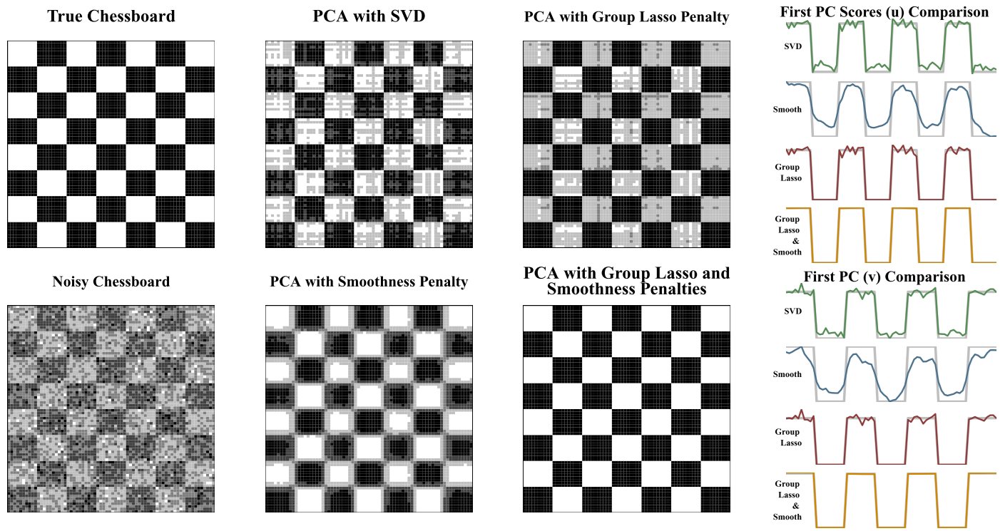
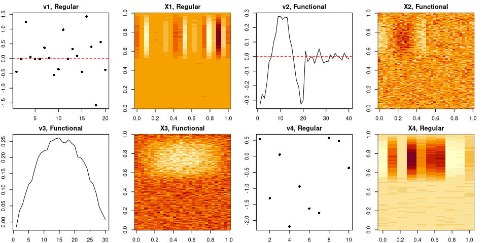
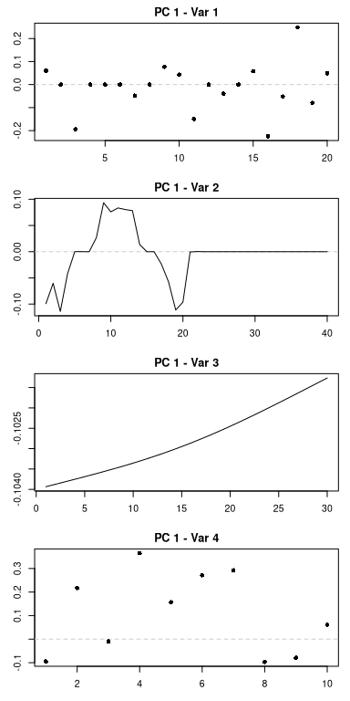
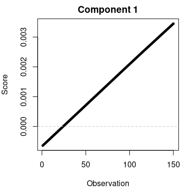
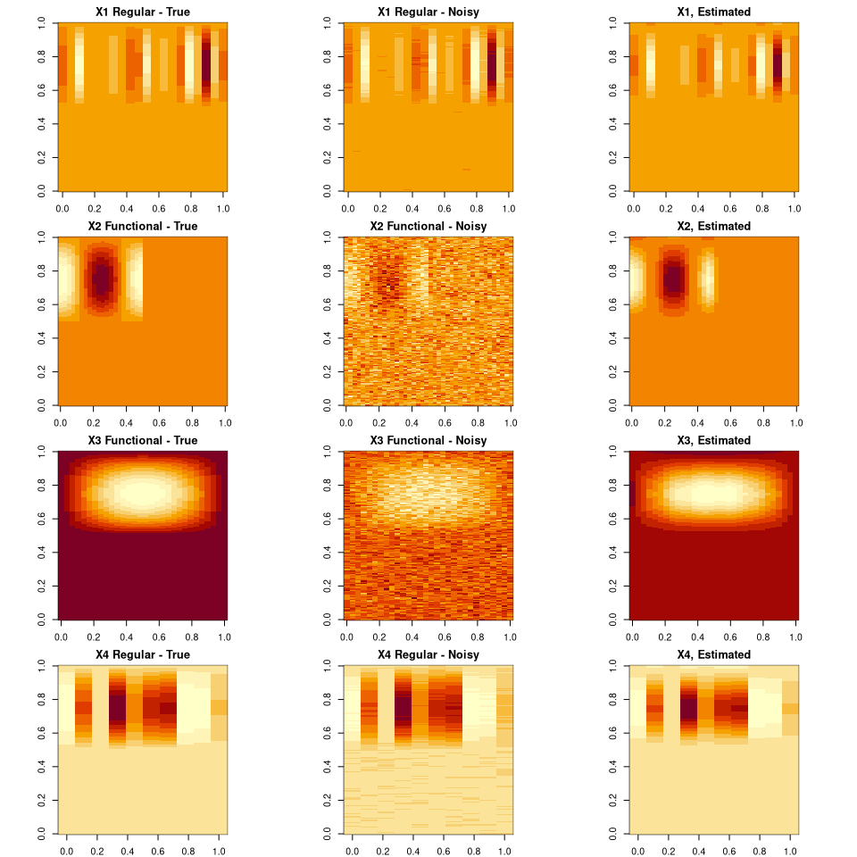
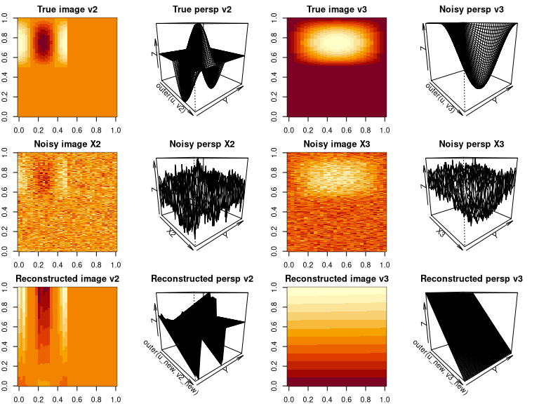
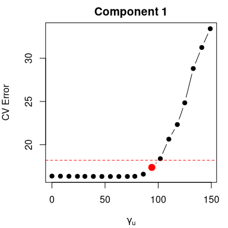
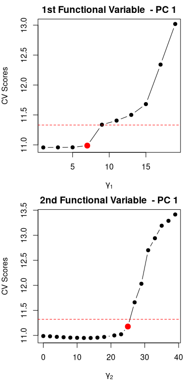
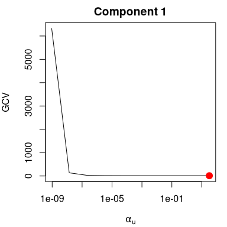
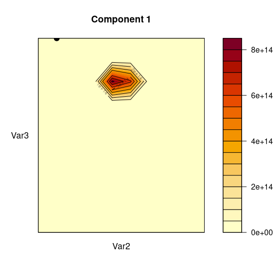

ReMPCA is an R package designed to extend Principal Component Analysis (PCA) to complex, high-dimensional datasets—including curves, images, functional, and regular data. By integrating multiple data types within a single framework, ReMPCA captures intricate relationships across variables and domains, making it an ideal tool for structured data analysis in fields like imaging, signal processing, and functional data analysis.
Unlike traditional PCA methods, ReMPCA offers flexible, fine-grained control through one- and two-way regularization. Users can independently apply smoothing and sparsity to different data components, with tailored regularization parameters across functional and regular sections. Built on an enhanced power algorithm, the package dynamically refines components and quantifies explained variance, delivering a powerful and unified solution for extracting meaningful structure from hybrid datasets.
Implementing varied penalties on both and improves accuracy. As shown in Figure below, for a noisy chessboard, applying the power algorithm with customized penalties, such as smoothness and group lasso, enforces a step-function structure in and , refining the vectors and yielding a reconstruction close to the true chessboard. More importantly, regularizing both directions simultaneously is more effective than separate one-way penalties, better preserving the data’s true structure.

gwid pipeline
Installation
To install the ReMPCA Package from GitHub, use the following code:
# install.packages("remotes")
remotes::install_github("mobinapourmoshir/ReMPCA")Example
The following example demonstrates how to generate q hybrid data (both regular and functional) and construct the input objects required for running ReMPCA:
library(ReMPCA)
set.seed(123)
# Create a common left singular vector u (length 150), with sparsity in the first half
x <- seq(0, 2 * pi, length.out = 150)
u <- sin(x)
u[1:75] <- 0
### Construct 4 variables with different characteristics
# Variable 1: Sparse right singular vector
m1 <- 20
v1 <- rnorm(m1, sd = 0.8)
v1[sample(1:m1, 5)] <- v1[sample(1:m1, 5)] * 1e-2 + rnorm(5, sd = 0.01)
X1 <- outer(u, v1) + rnorm(150 * m1, sd = 0.03)
# Variable 2: Piecewise smooth right singular vector (functional)
x2 <- seq(0, 2 * pi, length.out = 40)
v2 <- cos(2 * x2)
v2[21:40] <- 0 # Create piecewise structure
X2 <- outer(u, v2) + rnorm(150 * 40, sd = 0.5)
# Variable 3: Smooth right singular vector (functional)
m3 <- 30
x3 <- seq(0, pi, length.out = m3)
v3 <- sin(x3)
X3 <- outer(u, v3) + rnorm(150 * m3, sd = 0.2)
# Variable 4: Random structure
m4 <- 10
v4 <- rnorm(m4)
X4 <- outer(u, v4) + rnorm(150 * m4, sd = 0.05)
# Combine all variables into a single matrix (optional, not used directly)
X <- cbind(X1, X2, X3, X4)
### Create hybrid data objects
# Regular data (RD) object
rd_object1 <- rdClass(
data = as.matrix(X1),
Sparsity_parameter = round(seq(1, 19, length.out = 10))
)
# Functional data (FD) objects
fd_object2 <- fdClass(
data = as.matrix(X2),
argval = NULL,
Smoothing_parameter = NULL,
Sparsity_parameter = round(seq(0, 39, length.out = 20))
)
fd_object3 <- fdClass(
data = as.matrix(X3),
argval = NULL,
Smoothing_parameter = NULL,
Sparsity_parameter = 0
)
# Another regular data object
rd_object4 <- rdClass(
data = as.matrix(X4),
Sparsity_parameter = 0
)
# Combine all objects into a hybrid data structure
hd_list <- list(rd_object1, fd_object2, fd_object3, rd_object4)
object_list <- hdClass(
hdlist = hd_list,
argval = NULL,
Smoothing_parameter = NULL,
Sparsity_parameter = round(seq(0, 149, length.out = 20))
)
# Plot the data
par(mfrow = c(2, 4), pin = c(1, 1), mar = c(2, 2, 2, 2), pty = "s")
# Variable 1: Regular
matplot(v1, type = 'p', pch = 16, main = 'v1, Regular')
abline(h = 0, col = 'red', lty = 2)
image(t(X1), main = 'X1, Regular')
# Variable 2: Functional
matplot(svd(X2)$v[,1], type = 'l', main = 'v2, Functional')
abline(h = 0, col = 'red', lty = 2)
image(t(X2), main = 'X2, Functional')
# Variable 3: Functional
matplot(svd(X3)$v[,1], type = 'l', main = 'v3, Functional')
image(t(X3), main = 'X3, Functional')
# Variable 4: Regular
matplot(v4, type = 'p', pch = 16, main = 'v4, Regular')
image(t(X4), main = 'X4, Regular')
Regularized Multivariate Hybrid PCA function
Now that we have constructed our hybrid data object, we can apply the ReMPCA function to extract the principal components while incorporating smoothing and sparsity constraints.
ReMPCATest <- ReMPCA(hd = object_list,
centerhds = FALSE,
num_pcs = 1,
nfolds_u = 5,
nfolds_v = NULL,
thresh = 1e-10,
maxit = 100,
tuning_iter = 1,
parallel = FALSE,
weights = 0,
smoothness_type = "Second_order",
sparse_tuning_type = "soft",
tuning_order = "Sparsity",
cv.pick = "1se",
sparse_tuning_u = NULL,
sparse_tuning_v = NULL,
smooth_tuning_u = NULL,
smooth_tuning_v = NULL)
plot method
A variety of informative visualizations are available to help users interpret and evaluate results from the regularized multivariate hybrid PCA model. These include: PC function plots, which visualize the estimated principal component functions for each hybrid variable, with appropriate rendering for functional, regular, and image data types; PC score plots, which display the scores of the observations along selected components to help assess clustering or variation; cross-validation (CV) plots, which show the CV error curves across different sparsity levels to aid in selecting optimal sparsity parameters; and generalized cross-validation (GCV) plots, which depict the GCV criterion over smoothing parameter grids to guide smoothness selection. Each plot adapts automatically to the structure of the hybrid data and provides intuitive graphical insight into the dimensionality reduction process.
PC and PC scores plots
Once the model has been fitted, we can examine the output to see the principal components and their corresponding scores:
# Plot v
plot_pc_functions(ReMPCATest)
# Plot u
plot_pc_scores(ReMPCATest)
Reconstructed data
The reconstructed hybrid data, obtained after applying sparsity and smoothness through the ReMPCA framework, is shown below.
u_new <- ReMPCATest$PCScores[,1]
v1_new <- as.vector(ReMPCATest$PCFunctions[[1]][[1]])
v2_new <- as.vector(ReMPCATest$PCFunctions[[1]][[2]])
v3_new <- as.vector(ReMPCATest$PCFunctions[[1]][[3]])
v4_new <- as.vector(ReMPCATest$PCFunctions[[1]][[4]])
par(mfrow = c(4, 3), pin = c(1, 1), mar = c(2, 2, 2, 2), pty = "s")
# Var1
image(t(outer(u, v1)), main = 'X1 Regular - True')
image(t(X1), main = 'X1 Regular - Noisy')
image(t(outer(u_new, v1_new)), main = 'X1, Estimated')
# Var2
image(t(outer(u, v2)), main = 'X2 Functional - True')
image(t(X2), main = 'X2 Functional - Noisy')
image(t(outer(u_new, v2_new)), main = 'X2, Estimated')
# Var3
image(t(outer(u, v3)), main = 'X3 Functional - True')
image(t(X3), main = 'X3 Functional - Noisy')
image(t(outer(u_new, v3_new)), main = 'X3, Estimated')
# Var4
image(t(outer(u, v4)), main = 'X4 Regular - True')
image(t(X4), main = 'X4 Regular - Noisy')
image(t(outer(u_new, v4_new)), main = 'X4, Estimated')
In addition, the reconstructed two-way functional variables are displayed below.
# Plot 3D image
par(mfrow = c(3, 4), pin = c(1, 1), mar = c(2, 2, 2, 2))
# True
image(t(outer(u, v2)), main = "True image v2")
persp(outer(u, v2), theta = 50, main = "True persp v2")
image(t(outer(u, v3)), main = "True image v3")
persp(outer(u, v3), theta = 50, main = "Noisy persp v3")
# Noisy
image(t(X2), main = "Noisy image X2")
persp(X2, theta = 50, main = "Noisy persp X2")
image(t(X3), main = "Noisy image X3")
persp(X3, theta = 50, main = "Noisy persp X3")
# Reconstructed
image(t(outer(u_new, v2_new)), main = "Reconstructed image v2")
persp(outer(u_new, v2_new), theta = 50, main = "Reconstructed persp v2")
image(t(outer(u_new, v3_new)), main = "Reconstructed image v3")
persp(outer(u_new, v3_new), theta = 50, main = "Reconstructed persp v3")
CV and GCV Plots
Finally, cross-validation (CV) plots for tuning sparsity and generalized cross-validation (GCV) plots for selecting smoothness parameters can be produced as follows:
# CV Plot for tuning sparsity for u
plot_cv_u(ReMPCATest)
# CV Plot for tuning sparsity for v
plot_cv_v(ReMPCATest)
# GCV Plot for tuning smoothness for u
plot_gcv_u(ReMPCATest)
# GCV Plot for tuning smoothness for v
plot_gcv_v(ReMPCATest)